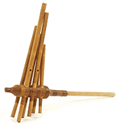

Laud: Латинский народный струнный инструмент, переходное звено между лютней и 12ти струнной гитарой. Корпус грушевидной формы, на 20ти ладовом грифе натянуто шесть сдвоенных струн. Likembe: Одна из разновидностей thumb-piano из Заира. См. также mbira. Lokole: Гигатский коммуникативный барабан Конго/Заира с тысячелетней историей. Сделан из цельного куска выдолбленного дерева. Впервые был представлен широкой аудитории Papa Wemba в конце 70х.  Lusheng (Лушэн): Древний язычковый пневматический инструмент, родственник sheng. В основном распространен среди этнических меньшинств юго-восточного Китая. Первые упоминания о лушэн встречаются в VI веке до н.э.Состоит из деревянного корпуса в виде круглой или четырехугольной воронки, заканчивающейся трубкой для вдувания воздуха, в который вставлены 5-8 бамбуковых трубок-резонаторов (mangtong). На концах трубок (входящих в корпус) укреплены металлические «проскакивающие» язычки, являющиеся основным источником звука. В стенке каждой трубки отверстие, которое исполнитель закрывает пальцем, чтобы струя воздуха «включила» соответствующий язычок. Размеры и регистры лушэна сильно варьируются: типичная длина резонаторов - 120-150 см, у народа мяо доходит до трех метров. |